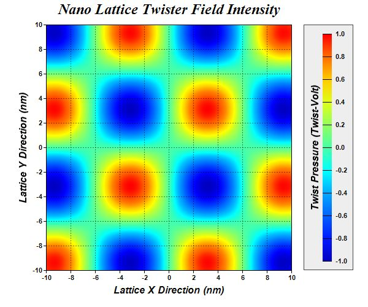

This example demonstrates continuous coloring of the
ContourLayer.
By default, a contour layer will be discretely colored, which means the color will change in discrete steps according to the z level. In continuous coloring, the color will change continuously according to the z level. Continuous coloring can be enabled using
ColorAxis.setColorGradient or
ColorAxis.setColorScale.
The following is the command line version of the code in "cppdemo/smoothcontour". The MFC version of the code is in "mfcdemo/mfcdemo". The Qt Widgets version of the code is in "qtdemo/qtdemo". The QML/Qt Quick version of the code is in "qmldemo/qmldemo".
#include "chartdir.h"
#include <math.h>
int main(int argc, char *argv[])
{
// The x and y coordinates of the grid
double dataX[] = {-10, -9, -8, -7, -6, -5, -4, -3, -2, -1, 0, 1, 2, 3, 4, 5, 6, 7, 8, 9, 10};
const int dataX_size = (int)(sizeof(dataX)/sizeof(*dataX));
double dataY[] = {-10, -9, -8, -7, -6, -5, -4, -3, -2, -1, 0, 1, 2, 3, 4, 5, 6, 7, 8, 9, 10};
const int dataY_size = (int)(sizeof(dataY)/sizeof(*dataY));
// The values at the grid points. In this example, we will compute the values using the formula
// z = Sin(x / 2) * Sin(y / 2).
const int dataZ_size = dataX_size * dataY_size;
double dataZ[dataZ_size];
for(int yIndex = 0; yIndex < dataY_size; ++yIndex) {
double y = dataY[yIndex];
for(int xIndex = 0; xIndex < dataX_size; ++xIndex) {
double x = dataX[xIndex];
dataZ[yIndex * dataX_size + xIndex] = sin(x / 2.0) * sin(y / 2.0);
}
}
// Create a XYChart object of size 600 x 500 pixels
XYChart* c = new XYChart(600, 500);
// Add a title to the chart using 18 points Times New Roman Bold Italic font
c->addTitle("Nano Lattice Twister Field Intensity ", "Times New Roman Bold Italic", 18);
// Set the plotarea at (75, 40) and of size 400 x 400 pixels. Use semi-transparent black
// (80000000) dotted lines for both horizontal and vertical grid lines
c->setPlotArea(75, 40, 400, 400, -1, -1, -1, c->dashLineColor(0x80000000, Chart::DotLine), -1);
// Set x-axis and y-axis title using 12 points Arial Bold Italic font
c->xAxis()->setTitle("Lattice X Direction (nm)", "Arial Bold Italic", 12);
c->yAxis()->setTitle("Lattice Y Direction (nm)", "Arial Bold Italic", 12);
// Set x-axis and y-axis labels to use Arial Bold font
c->xAxis()->setLabelStyle("Arial Bold");
c->yAxis()->setLabelStyle("Arial Bold");
// When auto-scaling, use tick spacing of 40 pixels as a guideline
c->yAxis()->setTickDensity(40);
c->xAxis()->setTickDensity(40);
// Add a contour layer using the given data
ContourLayer* layer = c->addContourLayer(DoubleArray(dataX, dataX_size), DoubleArray(dataY,
dataY_size), DoubleArray(dataZ, dataZ_size));
// Set the contour color to transparent
layer->setContourColor(Chart::Transparent);
// Move the grid lines in front of the contour layer
c->getPlotArea()->moveGridBefore(layer);
// Add a color axis (the legend) in which the left center point is anchored at (495, 240). Set
// the length to 370 pixels and the labels on the right side.
ColorAxis* cAxis = layer->setColorAxis(495, 240, Chart::Left, 370, Chart::Right);
// Add a bounding box to the color axis using light grey (eeeeee) as the background and dark
// grey (444444) as the border.
cAxis->setBoundingBox(0xeeeeee, 0x444444);
// Add a title to the color axis using 12 points Arial Bold Italic font
cAxis->setTitle("Twist Pressure (Twist-Volt)", "Arial Bold Italic", 12);
// Set color axis labels to use Arial Bold font
cAxis->setLabelStyle("Arial Bold");
// Use smooth gradient coloring
cAxis->setColorGradient(true);
// Output the chart
c->makeChart("smoothcontour.jpg");
//free up resources
delete c;
return 0;
}
© 2023 Advanced Software Engineering Limited. All rights reserved.